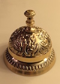

Harvest Festival Hoedown XXII
November 11–13, 2016
It's a hoot!

DC Lambda Squares is sponsoring our twenty-second annual Harvest Festival Hoedown on Veterans Day weekend. Three of the nation's top square dance callers will be calling Mainstream through C2 at the Yorktowne Hotel in York, Pennsylvania.
We guarantee an experience to remember and...
- a hundred friends from near and far who are determined to have fun
- seventeen hours of fun and challenging square dancing in three halls
- an elegant hotel built in 1925 that evokes the exciting age of flappers and their dashing escorts
- original spring-loaded hardwood dance floors
- door prizes from local mercharts, 50/50 raffles, and our famous over-the-top basket raffle
- an ice cream social gathering after dancing on Saturday night
more...
Our Staff Callers for 2016
Always the best!

Darren Gallina calls Mainstream through Advanced for several clubs in the San Luis Obispo area of California. He has made numerous recordings and is known for smooth moves, popular music, and lots of fun.

Saundra (Sandie) Bryant calls Mainstream through Challenge 4. She is a life-long resident of Chicago and long-time club caller for Chi-Town Squares. A favorite of IAGSDC conventions, she is known for sending dancers where they didn't know they could go.
Dayle Hodge calls Mainstream through Challenge 3B. He is club caller for both DC Lambda Squares and Baltimore's Chesapeake Squares. Dayle is known for creative, high energy dancing and heats the floor to a sizzling "Hot Hash."
In addition, members of the Gay Callers Association (GCA) are invited to take the microphone several times during the weekend. Contact the HFH Dance Master to reserve a place on the schedule.
A draft dance schedule will be posted a few weeks before the event. For the 2015 schedule, click here.
more...
Our Fabulous Venue
Spring-loaded wood floors!
Our venue since 2010, the historic Yorktowne Hotel is an elegant grand-dame of a hotel. The 11-story, Renaissance Revival-style building reflects the vivacious spirit of the 1920s with 20-foot-high ceilings, ornate brass, crystal chandeliers, wood-paneled rooms, and wall-sized mirrors. Modern conveniences include complementary wireless high-speed Internet, a fitness center, and a business center.
Most importantly, two of the hotel’s grand ballrooms feature traditional spring-loaded hardwood dance floors. Such floors provide subtle “give” via underlying layers of woven wooden battens that bend. As discerning dancers know, sprung floors feel softer, enhance performance, cause less fatigue, absorb shocks, and reduce injuries. They are considered the best type of floor for dancing and other indoor sports. Such floors are rare and difficult to find—especially originals laid nearly a century ago.

"Dance and stomp as hard as you want... your muscles may get sore but your joints won’t. It’s very forgiving. You must experience this floor if you love to dance.”
The hotel is located in the heart of historic Downtown York, within easy walking distance of the Romanesque Central Market and dozens of trendy restaurants and brewpubs. Briefly the capital of the young United States, York is close to Gettysburg, the Pennsylvania Dutch Country, and many other historic sites and charming towns.
To reserve a double-occupancy room at the special group rate of $89/night, call (800) 233‑9324 before October 11, 2016 and identify yourself as a dancer with DC Lambda Squares. Pets up to 50 pounds can stay with advance notice and a small fee.
more...
Dance Registration
Register early for a nice discount!
We offer three convenient ways to register:
- Pay at the door with cash, check, or credit card.
- Register online using a credit card or PayPal account.
- Print out the registration form and mail it with a check to:.
DC Lambda Squares/HFH
P.O. Box 77782
Washington, D.C. 20013
The per-person cost for the entire weekend (Friday 7 am–Sunday 1 pm) is:
- $110 if paid or postmarked by October 11, 2016.
- $130 if paid after October 11 or at the door.
- $60 for new dancers who have completed Mainstream in 2016.

Each dancer needs to register individually. Non-dancing companions ("dance widows") are welcome to attend at no cost.
You can also register for selected days or blocks of time (the cost is the same in advance or at the door):
- $70 for all-day Saturday.
- $30 for each of the following: Friday evening, Saturday morning, Saturday afternoon, Saturday evening, and all of Sunday.
The registration cost covers callers' fees and travel expenses, ballroom rental and setup, the ice cream social, decorations, and administrative expenses. Note that meals are not included—the hotel hosts two restaurants and many fine restaurants are within easy walking distance.
Questions? Need help finding transportation or a roommate? Contact the HFH Registrar.